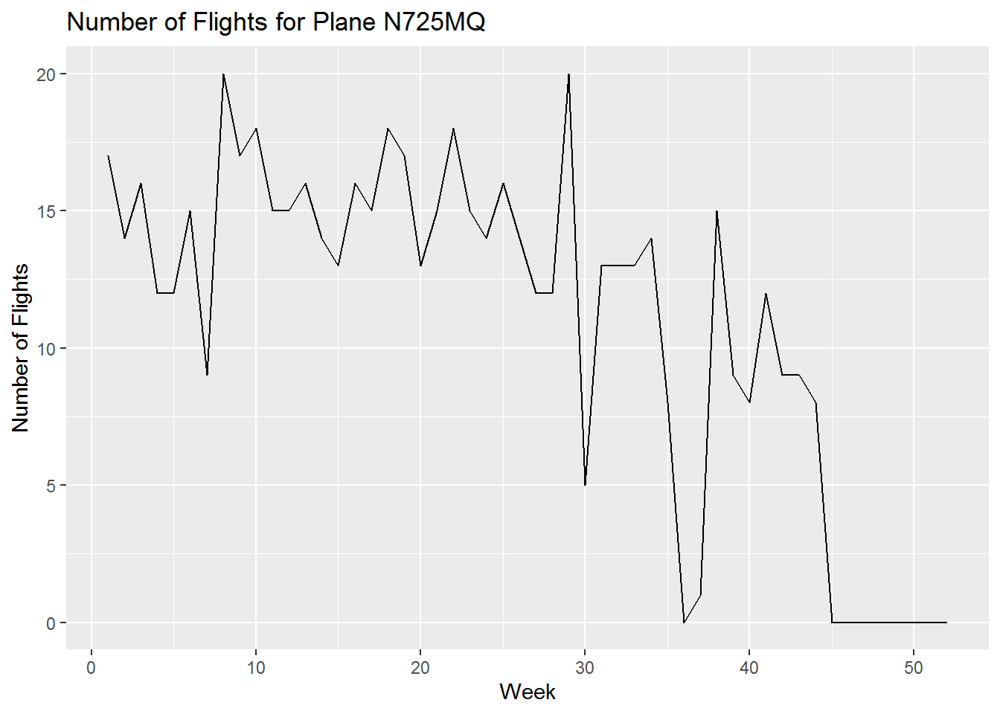

This blog provides an introduction to data wrangling with dplyr.
In data analysis, it is often necessary to clean, organize and transform the original data set. The common data collation and transformation work mainly includes the selection of specific analysis variables, the screening of data records meeting the conditions, sorting by one or several variables, processing the original variables and generating new variables, summarizing the data and grouping them, such as calculating the average value of each group.
The package will be used to do data wrangling in this blog is dplyr
The dplyr package is the masterwork of Hadley Wickham(author of the ggplot2 package, known as “a person who changed R”). He further separated and strengthened functions such as ddply() in the original plyr package, and focused on accepting dataframe objects, which greatly increased the speed and provided a more robust interface with other database objects.
dplyr is a grammar of data manipulation, providing a consistent set of verbs that help users solve the most common data manipulation challenges.
Here are some of the basic functions commonly used in the dplyr package:
select() picks variables based on their names.
filter() picks cases based on their values.
mutate() adds new variables that are functions of existing variables.
summarise() reduces multiple values down to a single summary.
arrange() changes the ordering of the rows.
install.packages("dplyr",repos = "http://cran.us.r-project.org")
library(dplyr)To explore the basic data manipulation verbs of the dplyr package, we will use the nycflights13: flights data set. The data set includes 336,776 flights from New York in 2013. The data came from the Bureau of Transportation Statistics and was recorded in the file nycflights13.
# Load Example Data
library(nycflights13)
library(tidyverse)# Overview of the dataset
dim(flights)## [1] 336776 19The dataset has 336776 rows and 19 columns.
# View the proporties of dataset
class(flights)## [1] "tbl_df" "tbl" "data.frame"# View the columns of dataset
names(flights)## [1] "year" "month" "day" "dep_time"
## [5] "sched_dep_time" "dep_delay" "arr_time" "sched_arr_time"
## [9] "arr_delay" "carrier" "flight" "tailnum"
## [13] "origin" "dest" "air_time" "distance"
## [17] "hour" "minute" "time_hour"The five main verbs (or functions) for working with data are as follows.
Each function takes a dataframe as its first argument and returns a dataframe.
select() can take a subset of the columns from a dataset.
select() for column selection, any comma-separated condition can be satisfied. Common auxiliary filtering functions include:
a:b (From column a to column b), - except for these columns
starts_with(),ends_with(),contains(),matches(),num_range(),one_of(),everything(),last_col().
Select the year, month, and day variables from the dataset.
select(flights,year,month,day)## # A tibble: 336,776 x 3
## year month day
## <int> <int> <int>
## 1 2013 1 1
## 2 2013 1 1
## 3 2013 1 1
## 4 2013 1 1
## 5 2013 1 1
## 6 2013 1 1
## 7 2013 1 1
## 8 2013 1 1
## 9 2013 1 1
## 10 2013 1 1
## # ... with 336,766 more rows# or you can write like this
select(flights,year:day)## # A tibble: 336,776 x 3
## year month day
## <int> <int> <int>
## 1 2013 1 1
## 2 2013 1 1
## 3 2013 1 1
## 4 2013 1 1
## 5 2013 1 1
## 6 2013 1 1
## 7 2013 1 1
## 8 2013 1 1
## 9 2013 1 1
## 10 2013 1 1
## # ... with 336,766 more rows# You will get the same selection resultfilter() can take a subset of rows from a dataset.
filter() for rows selection, and the comma-separated conditions should be satisfied at the same time.
Select all flights on January 1.
filter(flights,month==1,day==1)## # A tibble: 842 x 19
## year month day dep_time sched_dep_time dep_delay arr_time
## <int> <int> <int> <int> <int> <dbl> <int>
## 1 2013 1 1 517 515 2 830
## 2 2013 1 1 533 529 4 850
## 3 2013 1 1 542 540 2 923
## 4 2013 1 1 544 545 -1 1004
## 5 2013 1 1 554 600 -6 812
## 6 2013 1 1 554 558 -4 740
## 7 2013 1 1 555 600 -5 913
## 8 2013 1 1 557 600 -3 709
## 9 2013 1 1 557 600 -3 838
## 10 2013 1 1 558 600 -2 753
## # ... with 832 more rows, and 12 more variables: sched_arr_time <int>,
## # arr_delay <dbl>, carrier <chr>, flight <int>, tailnum <chr>,
## # origin <chr>, dest <chr>, air_time <dbl>, distance <dbl>, hour <dbl>,
## # minute <dbl>, time_hour <dttm>mutate() can add new variables and preserve existing ones from a dataset.
We can use mutate() to create two new variables called “gain”, “speed”.
mutate(flights,gain=arr_delay-dep_delay,speed=distance/air_time*60)## # A tibble: 336,776 x 21
## year month day dep_time sched_dep_time dep_delay arr_time
## <int> <int> <int> <int> <int> <dbl> <int>
## 1 2013 1 1 517 515 2 830
## 2 2013 1 1 533 529 4 850
## 3 2013 1 1 542 540 2 923
## 4 2013 1 1 544 545 -1 1004
## 5 2013 1 1 554 600 -6 812
## 6 2013 1 1 554 558 -4 740
## 7 2013 1 1 555 600 -5 913
## 8 2013 1 1 557 600 -3 709
## 9 2013 1 1 557 600 -3 838
## 10 2013 1 1 558 600 -2 753
## # ... with 336,766 more rows, and 14 more variables: sched_arr_time <int>,
## # arr_delay <dbl>, carrier <chr>, flight <int>, tailnum <chr>,
## # origin <chr>, dest <chr>, air_time <dbl>, distance <dbl>, hour <dbl>,
## # minute <dbl>, time_hour <dttm>, gain <dbl>, speed <dbl>arrange() can sort a dataframe by one or more of it’s columns.Desc () is used for descending order.
Arrange ‘arr_delay’ in descending order.
arrange(flights,desc(arr_delay))## # A tibble: 336,776 x 19
## year month day dep_time sched_dep_time dep_delay arr_time
## <int> <int> <int> <int> <int> <dbl> <int>
## 1 2013 1 9 641 900 1301 1242
## 2 2013 6 15 1432 1935 1137 1607
## 3 2013 1 10 1121 1635 1126 1239
## 4 2013 9 20 1139 1845 1014 1457
## 5 2013 7 22 845 1600 1005 1044
## 6 2013 4 10 1100 1900 960 1342
## 7 2013 3 17 2321 810 911 135
## 8 2013 7 22 2257 759 898 121
## 9 2013 12 5 756 1700 896 1058
## 10 2013 5 3 1133 2055 878 1250
## # ... with 336,766 more rows, and 12 more variables: sched_arr_time <int>,
## # arr_delay <dbl>, carrier <chr>, flight <int>, tailnum <chr>,
## # origin <chr>, dest <chr>, air_time <dbl>, distance <dbl>, hour <dbl>,
## # minute <dbl>, time_hour <dttm>summarise() can collapse the data into a single row, and give a summary of the data.
Calculate the mean departure delay time for all flights and name it “delay”.
flights %>%
summarise(delay=mean(dep_delay,na.rm = TRUE))## # A tibble: 1 x 1
## delay
## <dbl>
## 1 12.6Find plane (specified by tailnum variable) traveled the most times from New York City airports in 2013. After that, draw a graphic to show the number of trips per week over the year.
# load packages
library(ggplot2)
library(lubridate)
# Exclude planes without tailnum
max.plane <- flights %>%
filter(!is.na(tailnum))
# Summarise the flight times of each tailnum.
max.plane <- max.plane %>%
group_by(tailnum) %>%
summarise(number.flights = n())
# Find the plane traveled the most times from New York City airports in 2013
max.plane <- max.plane %>%
filter(number.flights == max(number.flights))
# Find the tailnum of the plane
max.plane <- max.plane %>%
select(tailnum) %>% unlist()
paste("The tailnum of the plane traveled the most times from New York City airports in 2013 is:",max.plane)[1] “The tailnum of the plane traveled the most times from New York City airports in 2013 is: N725MQ”
# Plot the number of trips per week over the year(use package(lubridate) to calculate the week)
flights.max.plane <- flights %>%
filter(tailnum == max.plane) %>%
mutate(date = paste(year,month,day,sep='-')) %>%
mutate(week=week(ymd(date))) %>%
group_by(week) %>%
summarise(number.flights=n()) %>%
right_join(data.frame(week=1:52)) %>%
mutate(number.flights=ifelse(is.na(number.flights),
0,
number.flights))
ggplot(flights.max.plane,aes(x=week,y=number.flights)) +
geom_line()+
xlab('Week') +
ylab('Number of Flights') +
ggtitle('Number of Flights for Plane N725MQ')